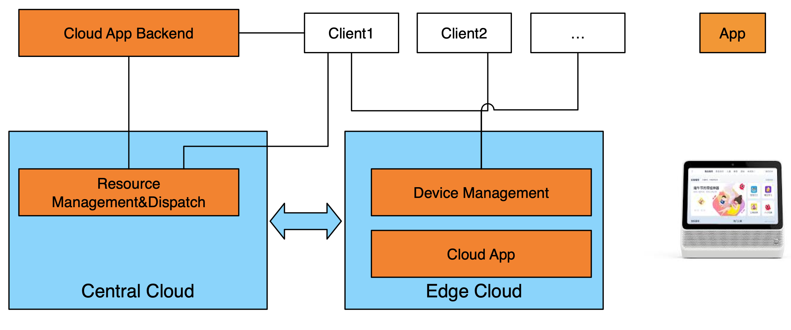
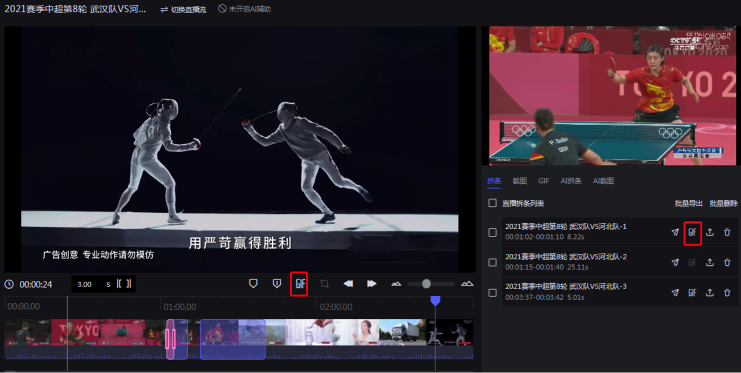
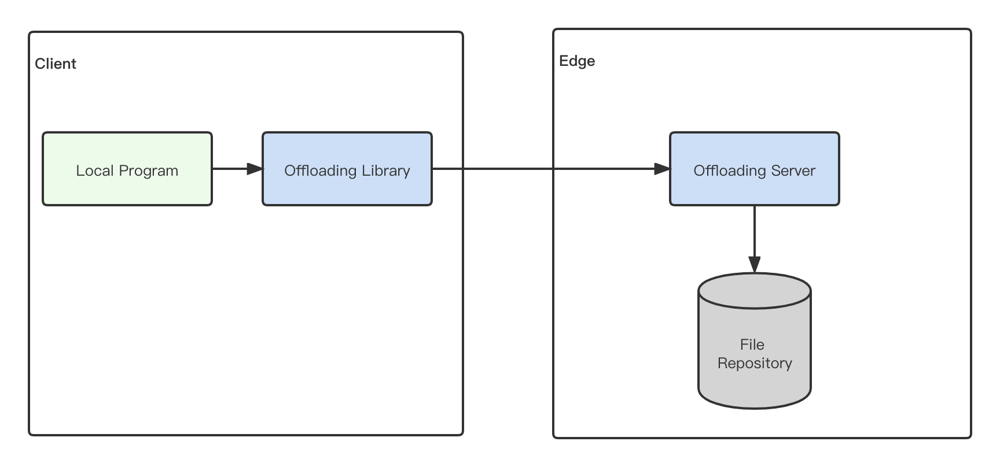
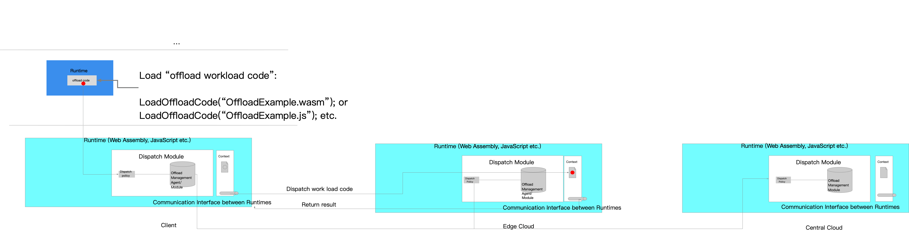
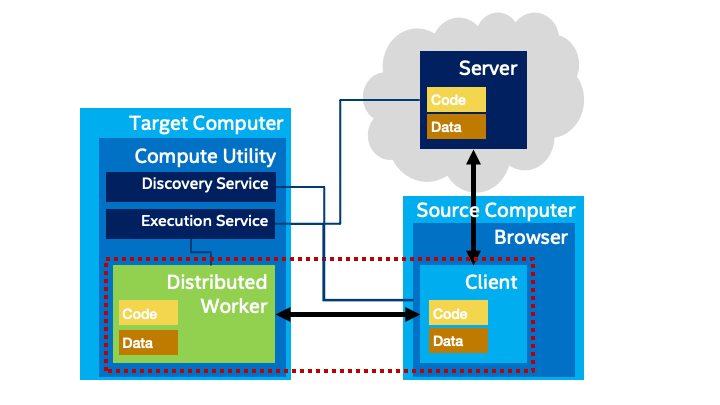
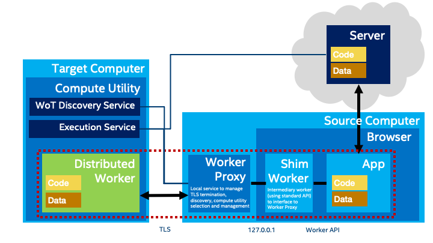
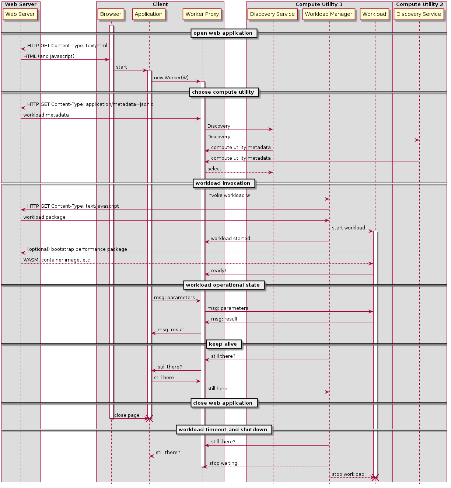
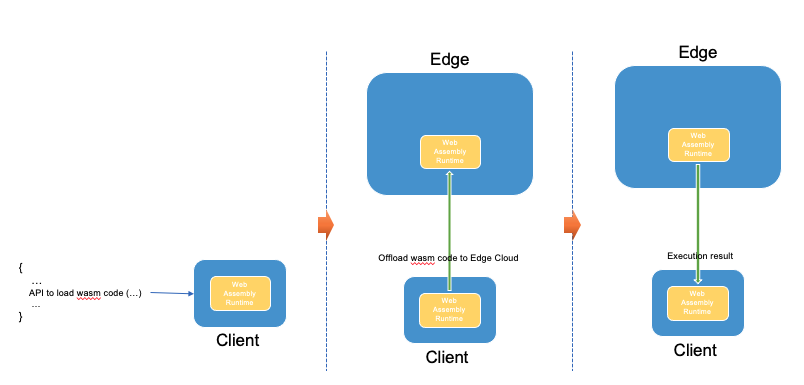

With the rapid development of cloud computing technology, the centralized cloud is evolving towards distributed "edge cloud" that allows developers to deploy their code as FaaS in
the edge cloud which is close to the user's location. One of such service is Alibaba Cloud's EdgeRoutine
service.
With the rapid adoption of new technologies such as machine learning, IoT ect in the client side's applications, the client side's application may also need to perform computing intensive work. For example, machine
learning inference can also be done in client side. As one of such examples, Taobao mobile App leverages client side machine learning inference for user face detection etc.
W3C is also working on WebNN standard that allow client side developers to leverage the machine learning acceleration
hardwares that resides in the client side devices.
To improve the client side application's performance, there is a trend to offload computing intensive work to the edge cloud, such as cloud app, cloud gaming etc.
However, current approach could be further optimized if there is a mechanism for Client-Edge-Cloud coordination.
This document discusses the use cases and requirements of Client-Edge-Cloud coordination mechanism and its standardization.
Terminology
This document uses the following terms with the specific meanings defined here.
Where possible these meanings are consistent with common usage.
However, note that common usage of some of these terms have
multiple, ambiguous, or inconsistent meanings.
The definition here will take precedence.
When terms are used with the specific meanings defined here they will
be capitalized.
When possible reference to existing standards defining these terms is given.
Edge
The periphery of a network.
FaaS
Function as a Service.
A service provided by a Computing Resource that can execute a stateless computation.
Cloud
A set of managed services that are
designed to be interchangable, scalable, and location-independent.
Cloud Resources
A set of managed Computing Resources available in the Cloud.
Edge Cloud
A set of Edge Resources managed as an extension of the Cloud.
Such resources use similar abstractions and management APIs as a cloud
but typically will add mechanisms to manage location and latency,
and will typically be deployed in a less centralized, more location and
latency-sensitive manner than a typical Cloud.
Edge Resource
A Computing Resource located on the Edge, that is, near the periphery of a network.
Note: this definition does not
necessarily include "endpoints" such as IoT sensors.
It refers specifically to computers
that can make Computing Resources available to others on the network.
Migration
The ability to move a workload from one Computing Resources to another.
See also Live Migration and Application-Directed Migration, which are subclasses.
Live Migration
The ability to transparently move a running workload from one Computing Resources to another.
This includes transparent migration of state and updates to references, so that the
application that invoked the resource does not need to manage the transition and
does not need to be made aware of it. Such migration needs to be implemented with
minimum impact on quality of service factors such as latency of responses.
See also the more general defintion of Migration.
Application-Directed Migration
The ability to move a running workload from one Computing Resources to another under
control of an application. In this version of Migration, the controlling
application or the Workload itself needs to manage the orderly transfer of state
from one Computing Resource to another, and may also have to explictly update
references, and will have to explictly manage quality of service factors such
as latency of response.
See also the more general definition of Migration.
Computing Resource
Any computer which can be used to execute a Workload, and may
include Edge, Cloud, or Client computers.
Client Computer
A Computing Resource used directly by an end user, such as a laptop or desktop.
Such a Computing Resource may also act as an Edge Resource if it provides
Computing Resources to other systems on the network.
CDN
Content Distribution Network.
A specialized network and set of computers targetted
at caching and delivering content with low latency.
May also host Edge Resources.
MEC
Multi-access Edge Computing.
A form of Edge Computing
based on Computing Resources
typically hosted within a cellular network's infrastructure.
Workload
A packaged definition of the compute work required to be executed
on a Computing Resource.
For example, a workload might be a container image, a script, or WASM.
Stakeholders and Business Models
Different stakeholders with an interest in edge computing will have different
motivations and priorities. In this section we present an categorization of the different
kinds of stakeholders and their business models. As we present use cases and discuss
proposals we can then relate these to the motivating drivers of different stakeholders.
Note that some stakeholders may belong to more than one category.
Abbv
Category
Business Model
Motivation
BWSR
Browser Vendor
OSS - supported by other business (e.g. CSP, ads/search)
More applications can use web
CSP
Cloud Service Provider
Usage or subscription, account based (service provider pays)
Offer edge computing service.
CDN
Content Distribution Network
Usage or subscription, account based (service provider pays)
Offer edge computing service
ISP
Internet Service Provider
Subscription/rental; HW sales in some cases
Offer edge computing service
HW
Hardware Vendor
Sale or rental
Desktops/servers as private edge computers
NET
Mobile Network Provider (MEC)
Usage or subscription, account based (user pays)
Offer compute utility service
OS
Operating System Vendor
Sale or subscriptions to OS licenses; HW co-sales
HW co-sales for edge computers
APPL
Application Developer
Sale or subscription to software licenses (or in some cases, ad supported)
Avoid limitations of client and/or cloud platforms
SVC
Web Service (API) Provider
Usage or subscription, account based (user pays)
Improved deployment options; increased usage
USER
End User
Direct payment, bundled cost, or private HW
Improved performance, lower latency
Use Cases
The client side application could be generally classified into the following categories:
Render intensive application
Render intensive application refers to the client side applications whose main task is to fetch the content from the backend server then rendering the content in the front-end.
For example, news,social media Web applications and mobile applications belongs to this category.
Computing intensive application
Computing intensive application refers to the client side applications whose main task is to do computing intensive work in the client side. For example, mobile gaming applications
need to calculate certain object's location and other complex parameters based on user interaction then rendering in the client side.
Hybrid application
Hybrid application refers to the application whose main task includes both rendering intensive work and computing intensive work. For example, morden e-commerce mobile application
leverage machine learning inference in the client side for AR tpye user experience. At the same time, the e-commerce mobile application needs to fetch dynamic content based
on uesr preference.
Mobile/static client
Some client side applications remain static most of the time. For example, a camera for traffic monitorning and analysis do not require mobility support.
On the other hands, some client side application will change its location continuously. For example, for applications running on a connected vehicle or self driving vehicle,
it will change its location rapidly with the vehicle.
Cloud App
Cloud App is a new form of AIoT application which utilizing cloud computing technology to move native mobile application to the cloud. The user interaction happens
in the client device side and the computing and rendering process happens in the edge cloud side. This can lower the client's hardware requirement and reduce
the cost.
As one examples of cloud App, Alibaba's Tmall Genie smart speaker leverage edge cloud to offload the computing intensive work from the client side to the edge cloud.
The client, the central cloud, the edge cloud works together in a coordinated way for Cloud App. Typically, the control and orchestration function is located in the central cloud.
The computing intensive function is located in edge cloud. The user intercation and display function is located in the client.
The advantage of Cloud App is that it can reduce the hardware cost of the client side device.

Cloud App Architecture
VR/AR
VR/AR devices such as VR/AR glasses normally has limited hardware resources, so it is preferred to offload the computing intensive task to the edge for acceleration and
reducing delay since the edge server is deployed near the location of the user.
Note: this could be generalized to "low-latency tasks". Some other examples might include
game physics simulation or CAD tools (in a business environment). The latter might add confidentiality
constraints (a business user may want to offload to on-premises computers).
We may also want to clarify that this pattern is for local communication to/from the client.
See also "Streaming Acceleration", where the communication is in-line with an existing network
connection.
Cloud Gaming
Cloud gaming is a game mode based on cloud computing. Under the operation mode of cloud game, all games are running on the cloud side, and the game images are compressed and transmitted to users by video stream through the network after rendering. The cloud gaming user can receive the game video stream and send control commands to the cloud to control the game.
Taking Click-and-Play scenario for example, since all the rendering and control commands are offloaded to the edge, the cloud game user don't need to install the game locally, just click the game and then play with it smoothly.
By offloading native games to the edge and making full use of the computing power and low-latency network, the cloud gaming can provide more smoother experience.
Professional Web-based Media Production
Processing and rendering media is a complex task. For example, a video editing application needs to do image processing, video editing, audio editing, etc. So it has high performance requirements.
Professional Web-based media production relies on web-based media editing tools heavily which can be used to do AI Cutting, AI Editing, AI Transcoding and publish videos to the cloud.
Since the edge cloud has more powerful computing power and close to user's location, by offloading the expensive rendering process to the edge, the web apps can render media more quickly
and provide better user experience.

Web-based media production
Online Video Conference
For online video conference application, the online video conference system provides realtime translation and subtitles service. This will use AI technology and it is
computing intensive. Also, the real time translation service is very delay sensitive.
The online video conference application could be installed on PC terminals or mobile terminals.
For PC terminals, there is enough computing resources and enough disk storage to allow the installation of online video conference application. In this case, the computing
intensive work could be done in the PC terminal and providing ultra-low latency user experience.
For mobile terminals, there is limited disk storage and limited computing capability, it is not possbile to run the computing intensive task on the mobile terminals. In this case,
the computing intensive task could be offloaded to the edge and then providing ultra-low latency user experience.
It is preferred that in this use case the online video conference application can offload the computing intensive task according to the terminal capability and edge resources availability.
The online video conference service provider can provide consistent user experience on different terminals.
Streaming Acceleration
In the case of video acceleration, we may want to offload work to a location with both
compute performance that is already on the network path. Specifically, consider a low-performance
client that wants to compress video or do background removal as part of a teleconference.
It could connect over a local high-performance wireless network to a local edge computer (perhaps
an enhanced ISP gateway box) that would then perform the video processing and forward the processed
video to the network.
We may also want to clarify that this pattern is for communication in-line with an existing
network.
See also "VR/AR" (should be generalized), where the communication is to/from the offload target.
Image Processing
For some mobile image processing applications, it is required to use AI algorithm for the image analysis and processing. It is normally need NPU chipset on the terminals for better performance.
For the terminals that without NPU chipset, it is preferred to offload the AI computing intensive task to the edge and this will provide a consistent user experience on different terminals.
Automatic License Plate Recognition
For automatic license plate recognition applications, offline processing can provide 90% recognition rate. Online processing on the edge will improve the recognition rate to 99%.
It is preferred to offload the license plate recognition computing intensive task to edge when the network connection is stable and if the network condition is not stable or broken, the offloaded computing
intensive task could move back to the terminals to guarantee the availability of the service.
Machine Learning
Machine learning inference can be done in the client side to reduce latency. W3C is working on WebNN standard that
allows client side developers to leverage the machine learning acceleration hardwares reside in the client side devices.
The client side devices have different hardware capabilities. For example, some mobile phone have very limited hardware resource and do not have GPU.
It is very difficult for this kind of client devices to run machine learning code on it.
So in this scenario, it is preferred to offload machine learning code to the edge cloud. The user experience is greatly improved in this case.
Robot Navigation Acceleration
Consider a robot navigating in a home using Visual SLAM. In this case the robot has limited
performance due to cost and power constraints. So it wishes to offload the video processing work
to another computer. However, the video is sensitive private data so the user would prefer that
it does not leave the user's premises, and would like to offload the processing to an existing
desktop computer or an enhanced gateway. Latency may also be a concern (the robot needs the
results immediately to make navigation decisions, for example to avoid a wire or other obstacle
on the floor).
Note: in general, there are other opportunities for IoT devices to want to offload work to another
computer. Video processing however is of special interest because of its high data and processing
requirements and privacy constraints.
Persistent tasks
In some cases it may be desireable to a task from a browser that continues to run even when the
browser application is not active. This could be used to monitor a condition for example and send
a notification when that condition is met. As a sub-category of this use case, the offloaded task
might be used to monitor IoT devices and instead of or in addition to sending a notification, it
might be used for automation.
Such an offloaded task might also be used to execute long-running computational
tasks such as machine learning or data indexing.
Persistent tasks require a mechanism to manage their lifetime using expiry dates or explicit controls.
In the case of applying this to IoT orchestration, there is also the issue of granting access rights
to such offloaded tasks, for example access to a LAN, to specific IoT devices on that LAN, and to the
data they generate.
High Availability Application
For the applications which offload some parts of its functionalities to the edge cloud, if the edge cloud is not available due to UE mobility or other reasons,
it is preferred that the functionalities could be handed over back to the client. More complex rules could be designed to improve the robustness of the application.
Gap Analysis
Common approaches for offloading
Currently, there are two common approaches for offloading. One is to send the codes in the request from the client to the edge server, the other is to fetch the codes from inner file repositories on edge and execute them. They all work fine, but both approaches have some downsides.
Sending codes from client to edge
In this approach, the client sends the local codes to the edge and execute the codes on the edge side. The downside is obvious, since more data is transferred and it may cause network latency.Handling more data will also put more strain on the resource-restricted end device. Meanwhile, some codes are sensitive, data security is also an big issue.
Fetching codes from file repositories and executing on edge

Fetching codes from inner file repositories
In this approach, The client leverages user-defined offloading library to send proper params to the offloading server and the server will fetch specified codes from inner repositories and then execute the codes.
The downside of this approach is that additional file repositories are needed and the developers have to upload the codes to the repository and make sure the local and the edge side have the same version codes.
Meanwhile, since the offloading library plays an import role in offloading, developers should be reliable for creating a robust offloading policy to discovery and connect with edge nodes, decide which parts of the codes can be offloaded and the time to offload. This will put more strain on the developer and affect the overall programming experience and the productivity.
Conclusion
The two approaches discussed above are mostly similar. The main difference is the way the codes are sent to the edge. However, except for those downsides mentioned, some common issues or pain points are still remained
and needed to be addressed.
Discrepancies between client runtime and edge runtime may cause running failures, as well as the runtime differences between edge node and edge node.So an unified runtime is needed to take into consideration. WebAssembly runtime may be good choice.
Capabilities for discovering and connecting with edge nodes is needed.
Some parts of the program might be sensitive, and the developer might not want it to be sent over the internet.Capabilities for developers to configure which parts can be offloaded is needed.
When certain condition meets, for example, if there is no edge server in proximity to the user or the internet is lost, codes should be executed locally instead of offloaded. That's to say, the developer will know what might be offloaded to a server but does not need to decide or care about when it is offloaded.
Security and privacy are important, secure communication mechanisms are needed.
There is no W3C standard currently available to address the above gaps. To achieve the interoperability between different vendors, standardization is needed.
Requirements
The requirements that was derived from the use cases are listed bellow.
Requirements
Related Use Cases
R1: Client Offload. Client should be able to offload computing intensive work to an edge resource.
Use case 2.1, 2.2, 2.3, 2.4, 2.5, 2.6, 2.7, 2.8, 2.9, 2.10, 2.11, 2.12, 2.13;
R2a: Application-Directed Migration.
The application should be able to explictly manage migration of work between computing resources.
This may include temporarily running a workload on multiple computing
resources to hide transfer latency.
Use case (refs TBD) ;
R2b: Live Migration. The edge cloud should be able to transparently migrate live work between computing resources.
This includes between edge resources, cloud resources, and back to the client, as necessary.
If the workload is stateful, this includes state capture and transfer.
Use case 2.1,2.2, 2.5;
R3: Discovery. A client should be able to dynamically enumerate available edge resources.
Use case (refs TBD);
R4: Selection. A client should be able to select between available resources, including making
a decision about whether offload is appropriate (e.g. running on the client may be the best choice).
This selection may be automatic or application-directed, and may require metadata or measurements
of the performance and latency of edge resources, and may be static or dynamic.
To do: perhaps break variants down into separate sub-requirements.
Use case (refs TBD);
R5: Packaging. A workload should be packaged so it can be executed on available edge resources.
Note: this means either platform independence OR a means to negotiate which workloads can run where.
Use case (refs TBD);
R6: Persistence. It should be possible for a workload to be run "in the background", possibly
event-driven, even if the client is not active. This also implies lifetime management (cleaning
up workloads under some conditions, such as if the client has not connected for a certain amount
of time, etc.)
Use case (refs TBD);
R7: Security and Privacy. The client should be able to control and protect the data used
by an offloaded workload.
Note: this may result in constraints upon the selection of offload targets, but
it also means data needs to be protected in transit, at rest, etc.
Use case (refs TBD);
R8: Resource Management. The client should be able to control the use of resources by an
offloaded workload on a per-application basis.
Note: If an edge resource has a usage charge, for example, a client may want to set
quotas on offload, and some applications may need more resources than others.
This may also require a negotiation, e.g. a workload may have minimum requirements,
making offload mandatory on limited clients.
Use case (refs TBD);
Architecture Proposals
This document proposes different architectures that address the needs identified above.
Seamless code sharing across client/edge/cloud
This architecture allows the client, edge and the central cloud share a common code running environment which allows the
task running in either client, edge, cloud or both in a coordinated way.
The proposed high level architectures is shown in the following figure:

Proposed High Level Architecture
Distributed Workers
The Web already has a set of standards for managing additional
threads of computation managed by application
code loaded into the browser: Web and Service Workers.
Workers already support a message-passing style of communication
which would allow them to execute remotely.
This architectural option proposes extending workers to support
edge computing as follows:
Compute Utility services would be made available on the
network that could provide
a capabilty to execute Worker payloads.
For fallback purposes, the client itself would also offer
a Compute Utility to support local execution when needed.
It would also be possible for the origin (the server) to host a Compute
Utility. However, in general Compute Utilities could be
hosted at other locations, including in desktops on the LAN,
within a local cloud, or within edge infrastructure.
Application developers would continue to use existing
APIs for Workers, but could optionally provide metadata about
performance and memory requirements which could be used to
select an appropriate execution target.
Browsers would collect metadata about available Compute
Utility services, including latency and performance, and
would select an appropriate target for each Worker.
The user would have controls in the browser to control
this rule, including the ability to specify specific offload
targets or to force local execution when appropriate.
Note: the reason it is suggested that the browser makes
the decision and not the application is to prevent fingerprinting
and associated privacy risks.
Metadata about available Compute Utilities might otherwise
be used to infer location. The proposed architecture hides
this information by default from the application while
still supporting intelligent selection of offload targets.
Once a Compute Utility is selected, the browser would
automatically (transparent to the application) use the
network API of the Compute Utility to load and execute the
Worker. Note that in the existing Worker API, a URL of
a Javascript workload is provided to the Worker.
The Compute Utility itself would be responsible for downloading
the workload, it would not have to be downloaded to the
browser and then uploaded. Also, a WASM workload could be used,
bootstrapping from the standard Javascript workload.
In the future, other workload packaging types, such as
container images, might also be supported. In general, the
workload execution environment should be the same as the
normal Worker execution environment. However, access to
accelerators to support performance and other advanced capabilities
will become more important in this context.
The proposed high level architecture is shown in the following figure.
The browser discovers Compute Utilities using
a Discovery mechanism. Discovery services in each discovered
Compute Utility return metadata, which then allows the
selection of a Compute Utility for each workload.
A Workload Managment service is then
used to load and run a packaged workload for the worker.

Proposed High Level Architecture: Distributed Workers
The following figure has some additional details on how the
various entities communicate with each other in the case of
working being offloaded from a web application running in a
browser. In this figure
we also introduce a "Shim Worker" which is just a regular worker
that acts as an intermediary to the remote worker, by connecting
to a local service, a "Worker Proxy", that can also take care
of terminating secure transport to the remote Compute Utility service.
This proxy can also do the work of discovering and selecting
a suitable Compute Utility for a given workload.
In the long run, the function of the shim and proxy can be integrated into
the browser, but in the short term, these components
can be used to provide
an implementation without needing explicit browser support.
Also, discovery can be performed using WoT Discovery, a W3C standard
already nearing completion.

Proposed High Level Architecture: Distributed Workers, Details
The workload is specified as a URL to the Worker API as usual.
Note that the selected Compute Utility does the work of actually fetching the
workload, via its network connection, rather than over the
browser's network connection (this also avoids potentially transmitting the workload
twice over the browser's network connection).
Once instantiated by the Workload Manager, the workload can
communicate with the application via the proxy, which can
also deal with any secure transport termination.
The current Worker API expects a workload in the form of a URL
that references ECMAScript (Javascript) content. However, we could
extend this in two ways: by allowing APIs that allow the script to
bootstrap other executable content, such as WASM, or by allowing
the GET from the URL to support other Content-Types.
A set of status-checking/keep-alive messages check if
the web application is still running. If the web application has
not responded to a status-checking message for a while, the workload can be automatically shut
down. This reflects current Worker lifetime semantics, where the
Worker is shut down (after a small delay to support navigation)
when the web application that starts it closes.
However, for Distributed Workers there is also the possibility that the
Compute Utility and the workers it supports might fail or become inaccessible due to network
conditions. The browser would have to detect this condition as
well by throwing an appropriate exeception if status-checking messages do
not arrive as expected. It would also be possible to reverse which system
initiates and responds to the status-checking/keep-alive messages; conceptually,
both systems need to confirm that the other is still responding.

Distributed Worker Message Flow for Browsers.
It would be also be possible to use a Compute Utility from a non-browser
client, such as an IoT device. In this case the interactions would be
simplified as a proxy and shim would not be required. The keep-alive
interaction would allow for longer-lived Distributed Workers in this case,
but would also automatically handle the case where an IoT device goes offline
or is deinstalled. An IoT device would also have to deal with the case
where a Compute Utility goes offline temporarily or permanently.
The diagram shows the workload being fetched from a web server as in the browser case.
Note, however,
that an IoT device could host a web server itself, and so can provide the
workload directly if necessary via what would essentially be a webhook.
Distributed Worker Message Flow for IoT Devices.
Standardization Proposals
WebAssembly as unified runtime
This proposal proposes to extend WebAssembly runtime and use it in both client side and edge cloud side as unified runtime.

WebAssembly As Unified Runtime Architecure
The proposed solution includes the following parts:
Load wasm code
The client load the WebAssembly code by invoking a standard API. This API should indicate that the wasm code could be offloaded to Edge cloud when certain condition is meet.
This API should also set the destination Edge cloud's location identifier.
Offload wasm code to Edge Cloud
The client side's WebAssembly runtime excutes the wasm code and when certain condition is meet, it offload the wasm code to the Edge cloud.
Run wasm code on Edge cloud
The wasm code runs on the Edge cloud, and return the result back to the client side.
Dispatch back to the client
When certain condition is meet, the wasm code is dispatched back to the client side and continue to run.
Potential Standards
JavaScript API to specify workloads:
This JavaScript API is to be used by a web application
to specify a workload.
It indicates this workload may be offloaded to the
edge cloud when certain conditions are meet.
The standardization of this API is required
since different implementations should implement this API
in the same way to make sure that the developers have the
same user experience.
Communication mechanism and protocol between client and Edge cloud:
The communication mechanism, the communication protocol,
and the interface (network API) between the client side
and the Edge cloud should be standardized to enable
the interoperability of different Edge cloud providers.
Edge cloud availability and network condition discovery:
The workload should only be offloaded when certain conditions
are met.
These condition may include Edge cloud availability
and network condition.
Out of Scope
The following topics will be out of scope of standardization
work:
Offloading policy:
This proposal recommend that offloading policy is not
standardized to allow the flexibility implementation of
different vendors.
Conclusion & Recommendations for the Way Forward
As analysed in the gap analysis section and in the potential standards section, the proposed potential standards work is to specify a standardized
common mechanism to offload code to the edge cloud.
There may be mulitple potential solutions and some of them may be related to WebAssembly and some may be related to webplatform APIs.
There are basically two different approaches for the standardization:
Option 1: Divide the standardization work into different relevant W3C working groups.
Option 2: Establish a new working group that focus on the standardization of this problem.
The disadvantage of option 1 is that if divided the work to different related working groups in W3C, it would be very difficult to maintain a unified architecture.
The advantage of option 2 is that it would be easier to maintain a unified architeture in one working group.
Considering this, it is preferred to establish a new working group (Option 2) to focus on the standardized solution development. The proposed new working group
could develop the standard solution architecture firstly. If the standard solution architecture require extension of current W3C standards, the new working group could work together with the related
working group(for example,WebAssembly Working Group etc.) to develop the extensions.
The proposed next step is to draft the charter which is used to establish the proposed new working group.